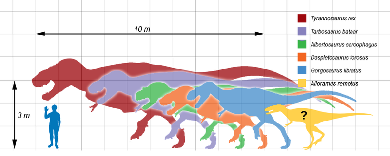

| № п/ п |
Наименование вида |
Ученый, открывший вид |
Дата открытия |
Вес/Размер | Масштаб |
| Валидные виды |  | ||||
| 1 | Triceratops horridus |
Эдвард Коп | 1892 | до 9т/ до 12м |
|
| 2 | |||||
| 3 | |||||
| 4 | |||||
Тираннозавр был двуногим хищником с массивным черепом, который уравновешивался длинным, тяжёлым и жёстким хвостом. По сравнению с большими и мощными задними конечностями этого ящера его передние лапы были совсем небольшими, но необыкновенно могучими для своего размера, и имели два когтистых пальца. Является крупнейшим видом своего семейства, одним из самых больших представителей тероподов и одним из самых крупных наземных хищников за всю историю Земли.